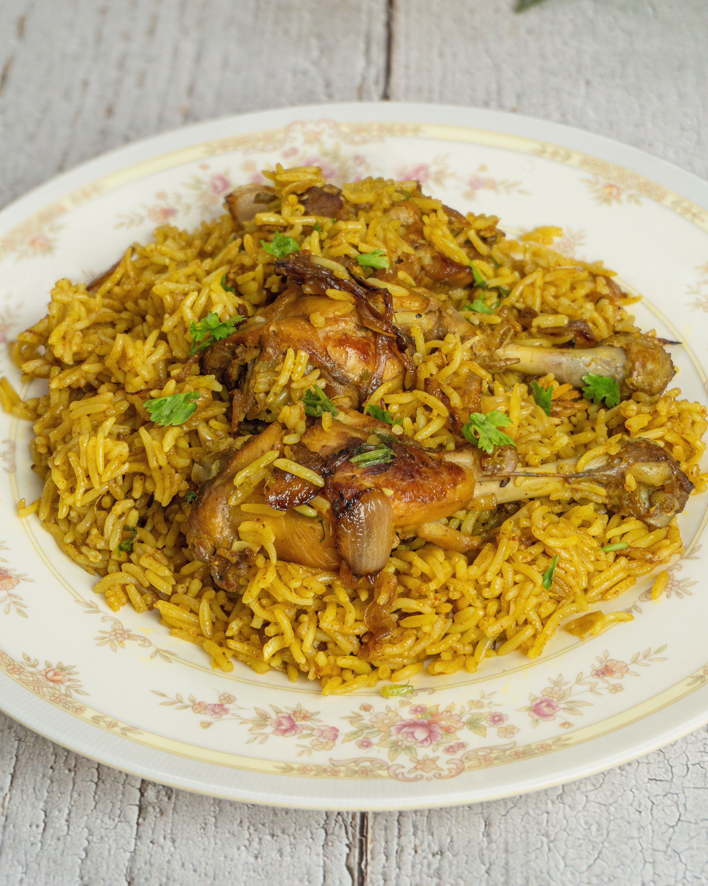

Chicken Biryani Recipe

This is a delicious chicken biryani recipe that you can make at home.It is a flavorful and aromatic dish that is perfect for special occasions or when you want to treat yourself to something delicious.
Ingredients:
- 2 cups basmati rice
- 500g chicken
- 2 onions
- 2 tomatoes
- Spices
- salt
- oil
Preparation Steps:
- Wash and soak the basmati rice for 30 minutes.
- Cut the chicken into pieces and marinate with spices and salt.
- Onions and tomatoes are chopped and set aside.
- Heat oil in a pan and add the marinated chicken. Cook until done.
- In another pan, cook the soaked rice until it's half-cooked.
- Layer the cooked rice and chicken in a pot and cook on low heat for 10 minutes.
- Serve hot and enjoy your delicious chicken biryani!
Recipe Details:
| Preparation Time |
30 minutes |
| Cooking Time |
45 minutes |
| Total Time |
1 hour 15 minutes |
| Servings |
4 people |
Nutrition Information:
| Nutrient |
Amount |
| Calories |
500 kcal |
| Proteins |
25 g |
| Carbohydrates |
50 g |
Watch Recipe Video
Click here to watch the recipe video on YouTube